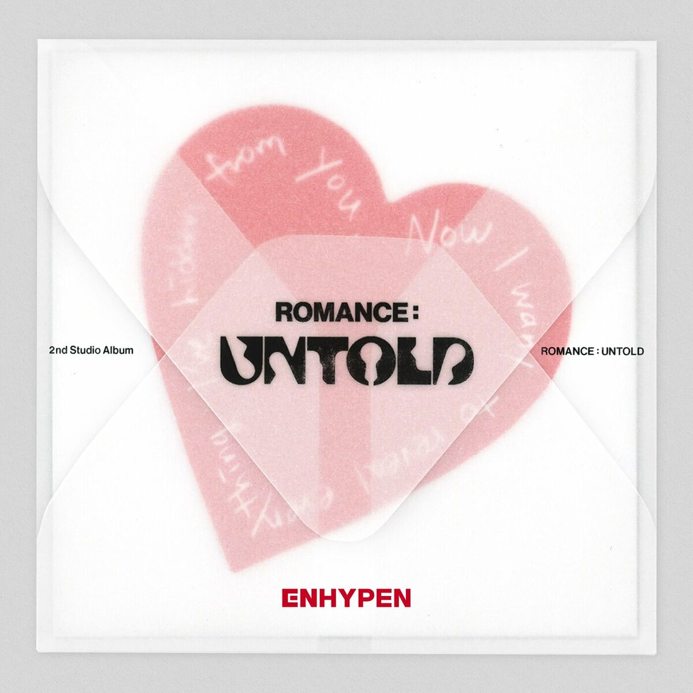
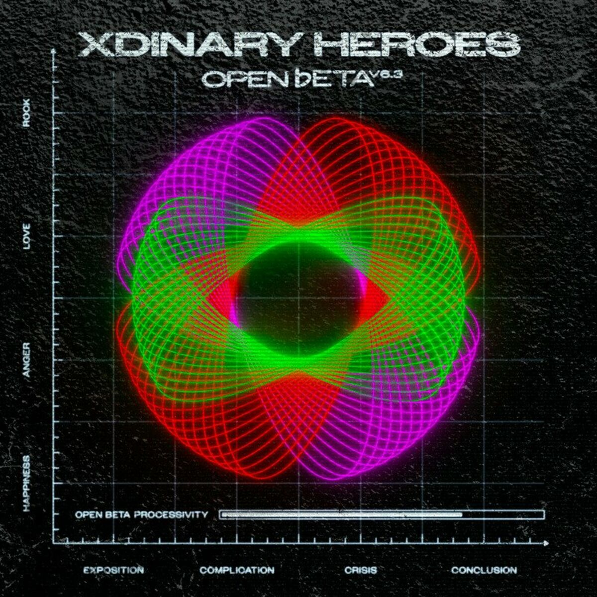
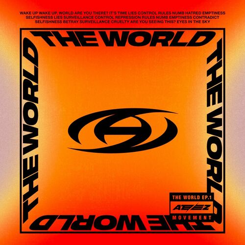

KPOP
La K-pop (abréviation de Korean Pop) est un genre musical originaire de Corée du Sud, combinant des influences pop, hip-hop, électro et R&B.
1. Stray Kids - S-Class

2. Enhypen - Moonstruck
3. TomorrowXTogether - Over The Moon

4. Xdinary Heroes - Save Me

5. Ateez - Cyberpunk
 3. TomorrowXTogether - Over The Moon
3. TomorrowXTogether - Over The Moon